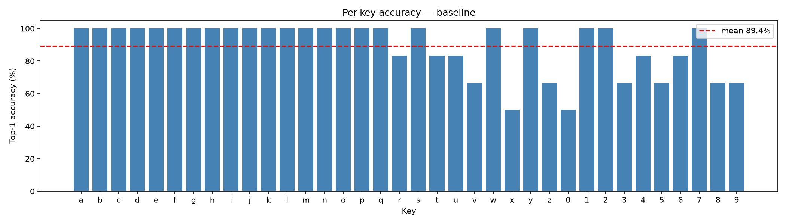
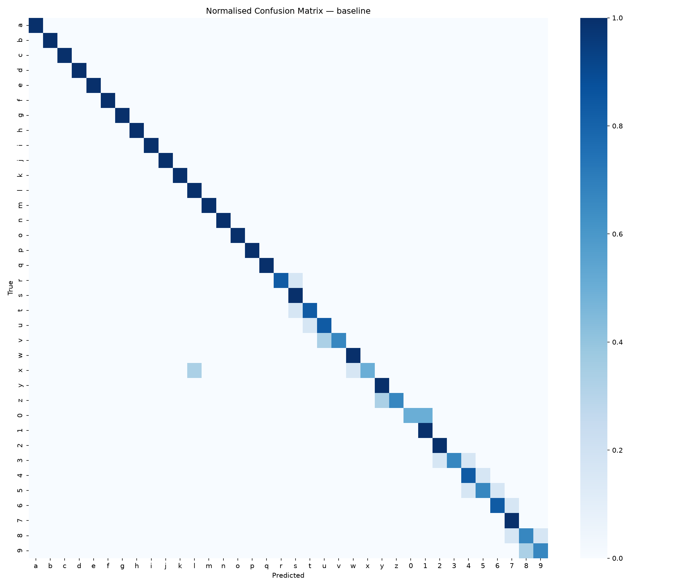

Results
It actually works — here's the proof
Trained and evaluated on held-out data. These are the real charts the training run produced. (Figures are on the project's synthetic benchmark, which proves the pipeline end-to-end; real-world accuracy depends on the keyboard and room.)


